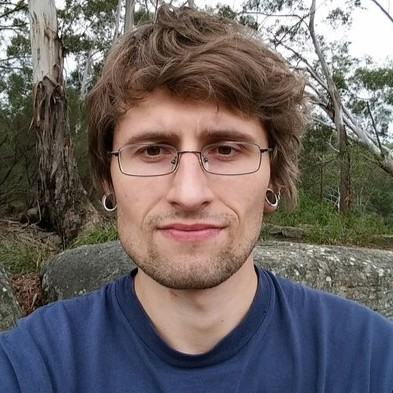
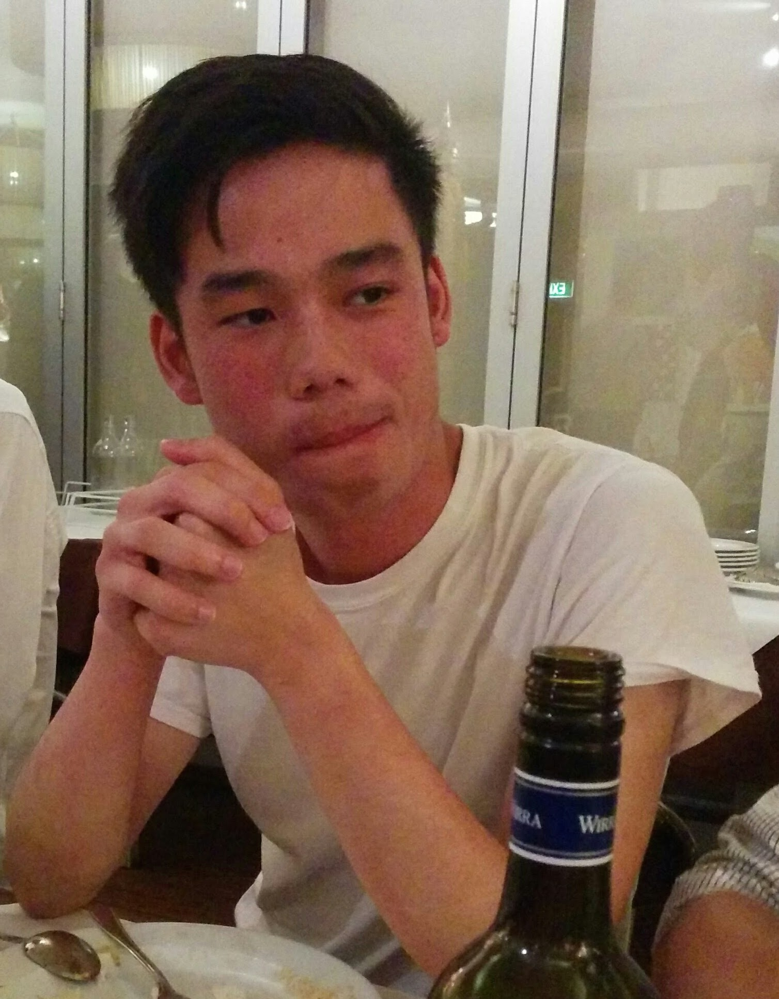

Todd Group Alumni
(Hello lovely alumni - feel free to update your entries below. e.g. with what you’re doing, or recent pictures.)
University College London


University of Sydney
| Name | Position | Year | Now |
|---|---|---|---|
Jamie Batten  |
PhD | 2017-2021 | Lead Chemistry Teacher, Matrix Education |
| Marat Korsik  |
PhD | 2017-2021 | Regulator Scientist, Australian Industrial Chemicals Introduction Scheme |
| Paul King  |
PhD | 2017-2020 | Patent Examiner, IP Australia |
| Julius Adamson | Honours | 2018 | PhD, The University of Sydney |
| Nicholas Smith | Honours | 2018 | PhD, The University of Sydney |
| David Smith |
Postdoctoral Fellow | 2017–18 | Lecturer, Federation University Australia |
| Conor Graham |
Honours | 2017 | Strategy and Buisness Operations Manager, Atlassian |
| Malcolm Spain |
Postdoctoral Fellow | 2015–17 | Senior Scientist, Isomorphic Labs |
| Sebastien Dath |
Honours | 2017 | Change Officer, Transport for NSW |
| Hung Phat Duong |
Honours | 2017 | PhD, The University of Sydney |
| Ryan Macdonald |
Visiting Student (University of Southampton) |
2017 | Data Modeler, UK Ministry of Defence |
| Christopher Brown |
Honours | 2016 | Medical Writer, McCann Health Australia |
| Frank Jiang | Honours | 2016 | |
| Alice Motion (née Williamson) Personal Website, |
Postdoctoral Fellow | 2012-16 | Associate Professor, University of Sydney |
| Haochuan Mao |
Visiting Student (Nanjing University) |
2016 | PhD, Wasielewski Group, Northwestern University |
| Hasini Murage |
Honours | 2015 | Co-design and Engagement Manager, Australian Government Department of Health and Aged Care |
| Daniel Moawad |
Honours | 2015 | Forensic Chemist, NSW Health Pathology |
| Tianyi Zheng |
Visiting Student (Nanjing University) |
2016 | Scientist I, Chemistry, PTC Therapeutics |
| Sandra Ast |
Postdoctoral Fellow | 2013-15 | Founder/CEO, AusSI Systems |
| Anthony Lo |
PhD (w/ Trevor Hambley) | 2010-14 | Patent Attorney, Alder IP |
| Tim Sheedy |
PhD (w/ Peter Rutledge) | 2009-14 | Analytical Chemist, AB Mauri |
| Thomas MacDonald |
Honours | 2014 | Consultant - Energy Markets, Aurecon |
| Swapnil Anam | PhD | ||
| Jo Delbridge | Honours | 2014 | Australian Government Department of Health |
| Katrina Badiola |
Honours | 2013 | Senior Scientist, Pharmaron |
| Murray Robertson |
Postdoctoral Fellow | 2011-13 | Research Fellow, CMAC Future Manufacturing Research Hub |
| Mingfeng Yu |
PhD | 2009-13 | Postdoctoral Fellow, University of South Australia |
| Nilupa Amarasinghe |
PhD | 2009-13 | Senior Lecturer, University of Peradeniya |
| Althea Tsang |
PhD | 2009-13 | Patent Attorney at Davies Collison Cave |
| Patrick Crisologo | Honours (w/ Peter Rutledge) | 2013 | |
| Matin Dean |
Graduate Diploma | 2012 | Science Teacher, Narrabundah College |
| Jim Cronshaw | Honours | 2012 | Year IV Medicine/Surgery, ANU |
| Soo Jean Park |
PhD | 2009-12 | Postdoctoral Fellow, Macquarie University |
| Paul Ylioja |
Postdoctoral Fellow | 2011-12 | Consultant at RPA Risks and Policy Analysts |
| Clara Shen |
TSP Undergraduate | ||
| Qun Yu |
Postdoctoral Fellow | 2010-12 | Higher Education Consultant, Darlo Higher Education |
| Cale Burge |
TSP Undergraduate | 2012 | |
| Sarah Carman |
TSP Undergraduate | 2012 | Founder, Sponge Education, and Teacher, Redlands |
| Matthew Tarnowski |
TSP Undergraduate | 2012 | PhD, University of Bristol |
| Angus Jones | Graduate Diploma (w/ Peter Rutledge) | 2011-12 | |
| Michael Woelfle |
Postdoctoral Fellow | 2009-2011 | Process Expert & Validation Expert, Novartis |
| Ahamed Muneer | PhD | 2007-11 | Senior Research Fellow, SAHMRI |
| Zoe Hungerford | Undergraduate | 2011 | |
| Jack Orford |
Honours (w/ Peter Rutledge) | 2011 | Counsel, Davis Polk & Wardwell LLP |
| Cyril Tang |
TSP Undergraduate (w/ Peter Rutledge) | Junior Doctor, Hunter New England Local Health District | |
| Thiru Thirukkumaran | MSc | ||
| Victor Sun | Honours | 2009 | |
| Laura White | TSP Undergraduate | ||
| Yu Heng Lau |
Honours | 2009 | Lecturer, The University of Sydney |
| Tomasz Wyczesany | PhD | 2004-8 | Honorary Research Associate, University of Sydney, and Development Chemist, Alpha Chemical |
| Taliesha Paine |
Honours | 2007-8 | Medical Science Liaison, Otsuka |
| Milena Milewska | Honours | 2007 | |
| Candy Chun | Honours | 2007 | |
| Adi Ramana | Postdoctoral Fellow | 2006-7 | Senior Scientist, Heterodrugs Ltd, Hyderabad, India |
| Wing Yan Leung | Honours | 2006 |